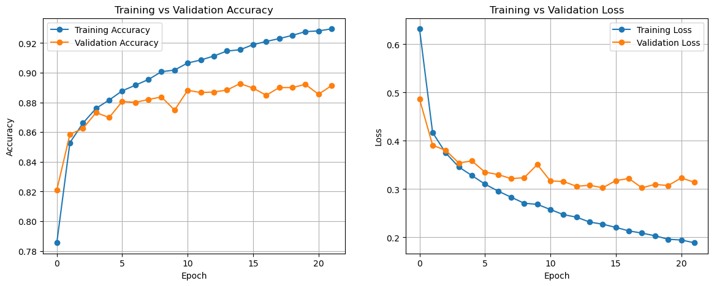
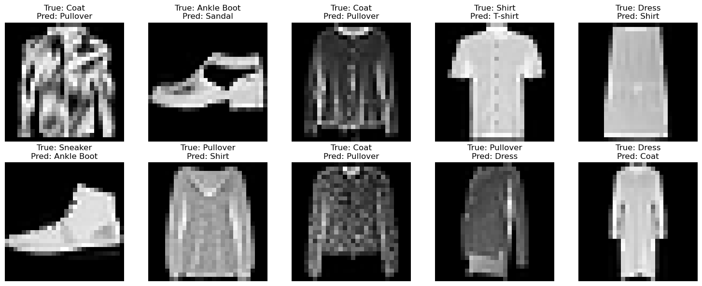
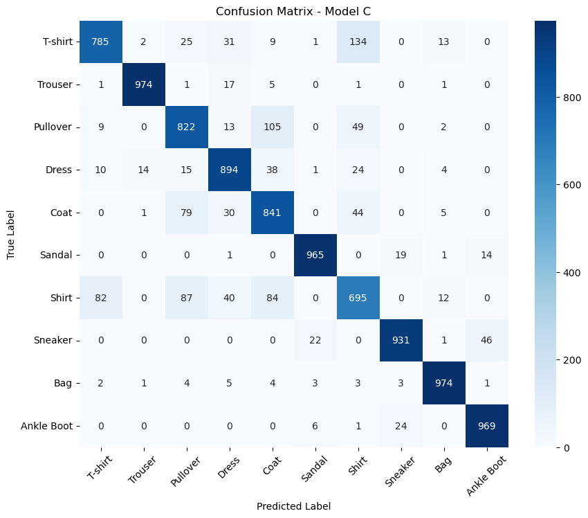

Fashion MNIST Classification
Deep Learning Case Study
Classification of clothing images using TensorFlow and Keras with extensive experimentation to improve model performance.
← Back to PortfolioDataset
60,000
Training Images
10,000
Testing Images
28×28
Image Size
10
Classes
Project Overview
This project uses the Fashion MNIST dataset to classify grayscale images of clothing items. I designed and trained a fully connected neural network using TensorFlow and Keras while experimenting with optimizers, learning rates, callbacks, and regularization techniques to improve accuracy and reduce overfitting.
Technologies
Workflow
Preprocessing
- Normalized pixel values
- Flattened images
- One-hot encoded labels
Model Architecture
- Input: 784 features
- Dense hidden layers with ReLU
- Softmax output (10 classes)
Experiments
- Adam vs RMSprop
- Learning rate tuning
- L1 & L2 regularization
- EarlyStopping
- ModelCheckpoint
Results
The best model achieved approximately 89.7% test accuracy. By comparing different optimizers and training strategies, I improved generalization while reducing overfitting. EarlyStopping and ModelCheckpoint helped preserve the best-performing model automatically.
Project Gallery



Lessons Learned
- Data preprocessing strongly influences model performance.
- Hyperparameter tuning improves accuracy.
- EarlyStopping helps prevent overfitting.
- ModelCheckpoint saves the best-performing model.
- Fashion MNIST is more challenging than MNIST because several clothing classes have similar visual patterns.
Future Improvements
- Implement Convolutional Neural Networks (CNNs).
- Add Batch Normalization.
- Experiment with Dropout.
- Use learning rate scheduling.
- Compare with transfer learning models.